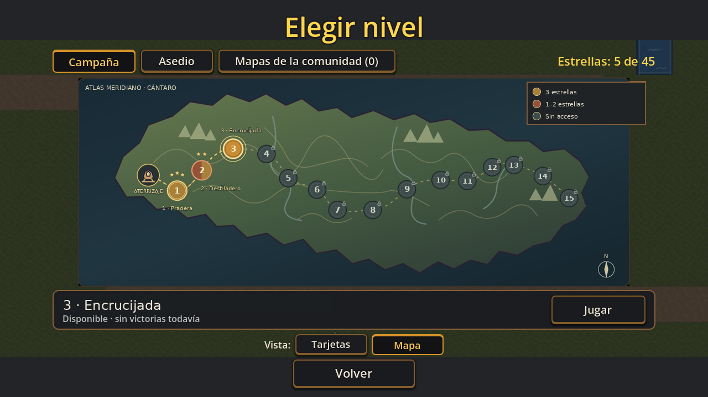
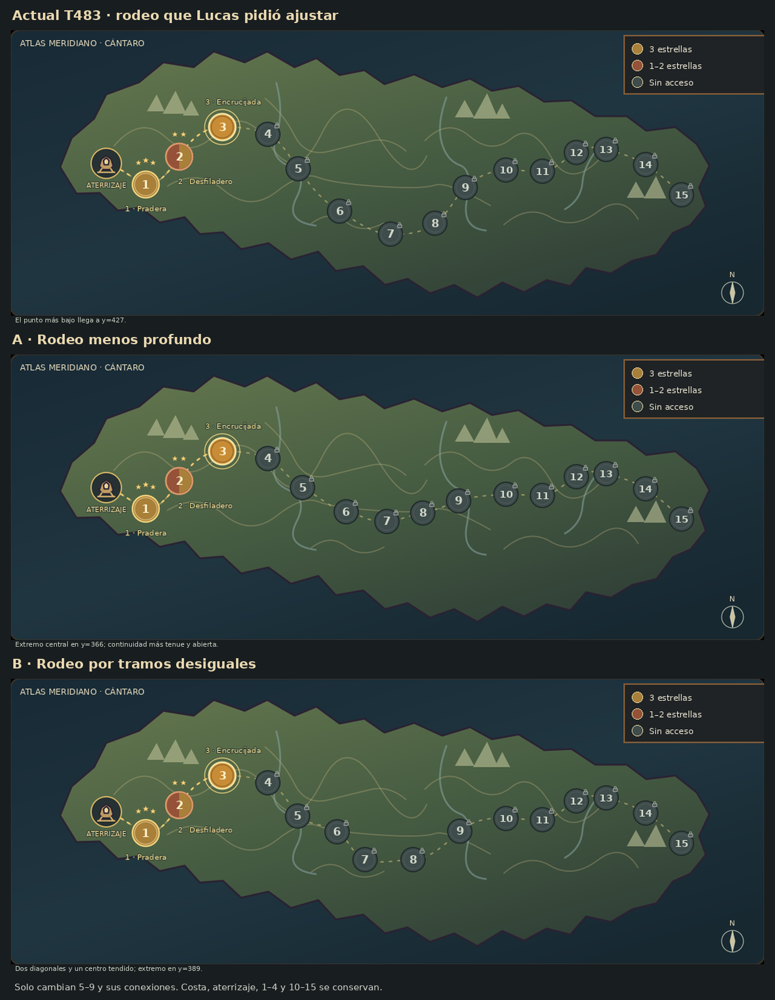

Dos alternativas para el tramo sur
Tomamos «la parte de abajo» como el rodeo de los niveles 5–9. Estas opciones conservan la costa original, el aterrizaje, los puntos 1–4 y todo el corredor 10–15. Solo cambia el tramo central entre los anclajes 4 y 10.

B · El rodeo deja de ser un arco continuo: entra por una diagonal corta, cambia el paso en el 6 y retoma el este desde un centro tendido. Mantiene más amplitud que A.
Las tres capturas tienen 1280 × 720. Cambiá de versión para comparar sin mover el marco. Las imágenes son composiciones estáticas y no capturas de una integración al juego.
A · Menos profundoAcerca 5–9 a la franja central del continente. El punto 7 pasa de y=427 a y=366. Conserva una curva suave más tenue; deja más espacio libre al sur.
B · Tramos desigualesEl punto 7 queda en y=389. Descompone la bajada en diagonales de largo distinto, mantiene el centro tendido y vuelve hacia 9 con una conexión más larga. La recomendación para revisar es B.
Las tres versiones en la misma lámina

De arriba hacia abajo: actual T483, A y B. Las coordenadas describen solo la composición de la muestra; no asignan altitud ni lore.
Qué falta elegir
¿Preferís A o B para el recorrido 5–9? Si «la parte de abajo» se refería a la costa o a otro elemento de la pantalla, indicá cuál: en estas variantes se conservó.
Las dos opciones esperan tu decisión. No integran arte final ni validan controles, teléfono o rendimiento; los estandartes siguen con su aprobación por separado.